0.5.39 其他玩家手牌避让副露
副露贴靠和放大后的尺寸保持；其他玩家的站立手牌、和牌摊牌、流局摊牌沿各自牌列避让副露，自摸牌跟随摊牌位置。17张实际Unity渲染截图：2张0.5.38对照，15张本次结果。均为合成测试局面，非安卓真机截图。点击可查看完整尺寸。
3人桌，同一四组副露局面
 0.5.38：其他玩家手牌与副露重叠0.5.39：沿各玩家牌列平移手牌，保留加大的距离
0.5.38：其他玩家手牌与副露重叠0.5.39：沿各玩家牌列平移手牌，保留加大的距离4人桌，同一四组副露局面
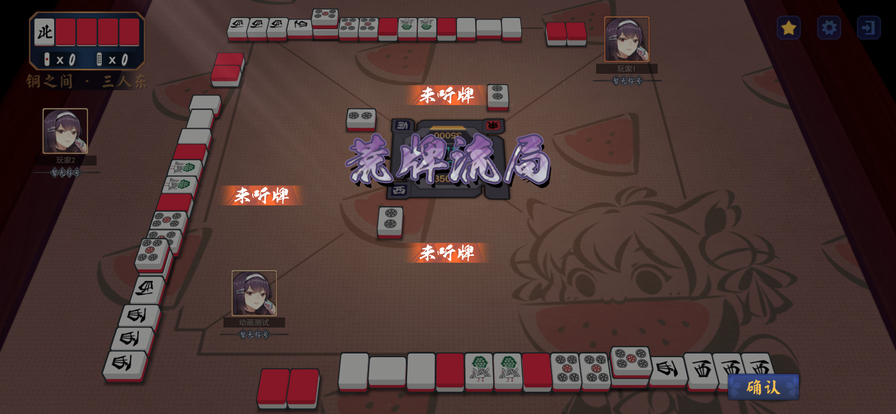
荒牌流局扣牌 · review-0539-draw-down-3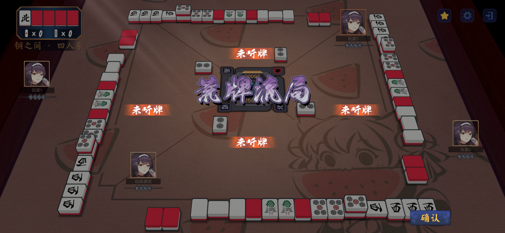
荒牌流局扣牌 · review-0539-draw-down-4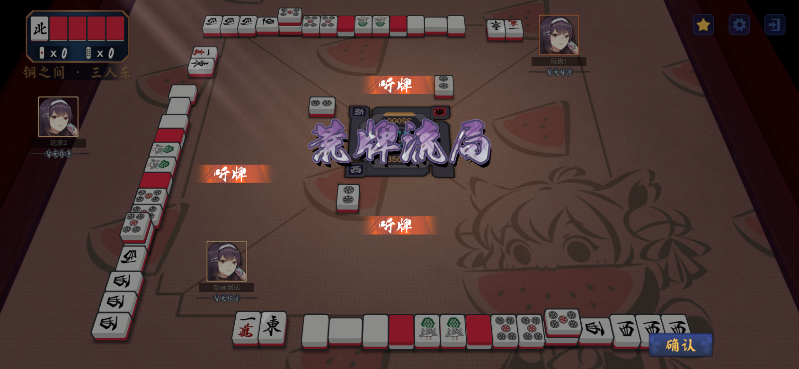
荒牌流局摊牌 · review-0539-draw-up-3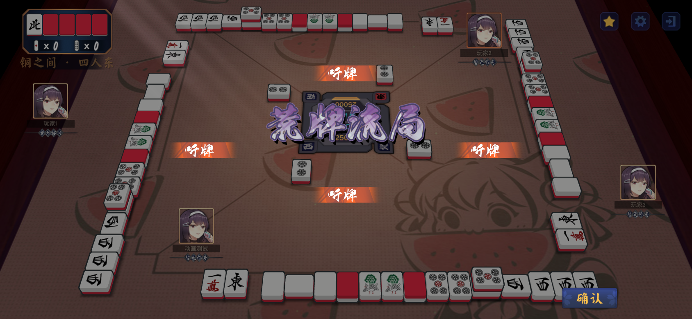
荒牌流局摊牌 · review-0539-draw-up-4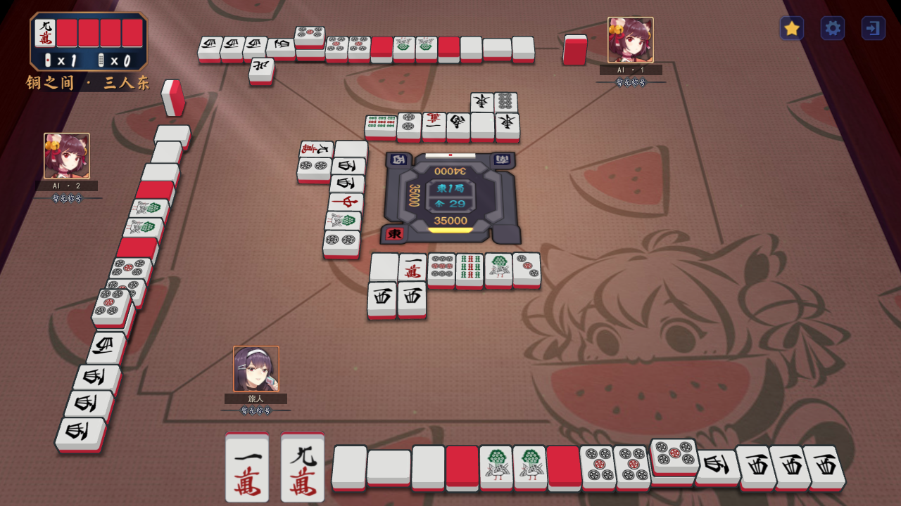
四组副露与站立手牌 · review-0539-standing-3-1280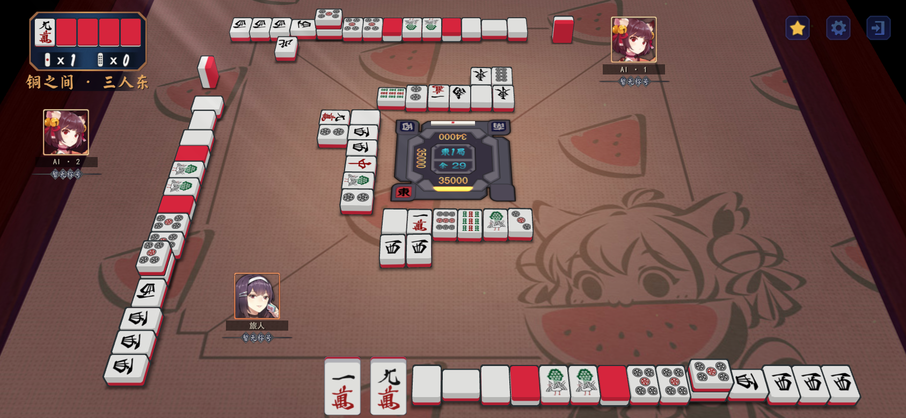
四组副露与站立手牌 · review-0539-standing-3-1688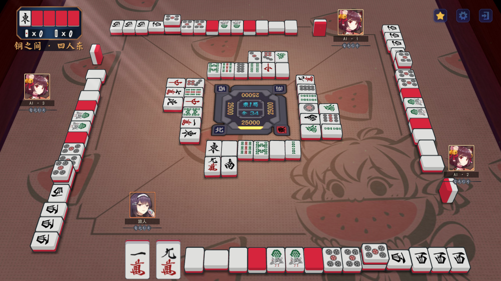
四组副露与站立手牌 · review-0539-standing-4-1280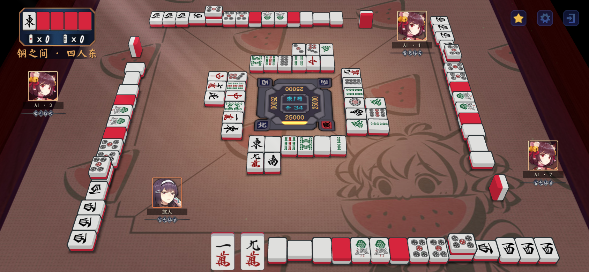
四组副露与站立手牌 · review-0539-standing-4-1688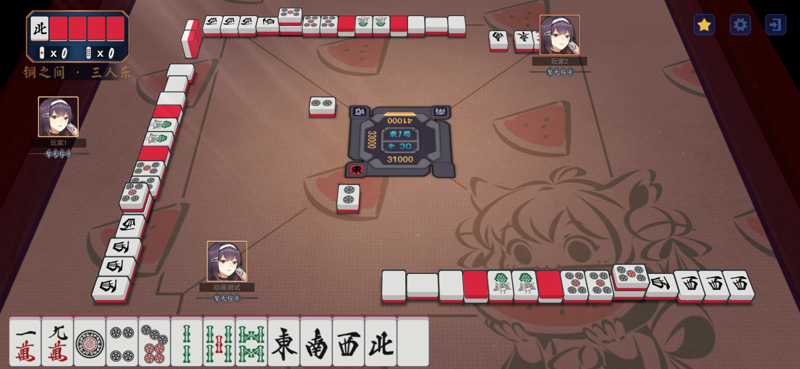
其他玩家自摸：摊牌与自摸牌 · review-0539-tsumo-seat-1-3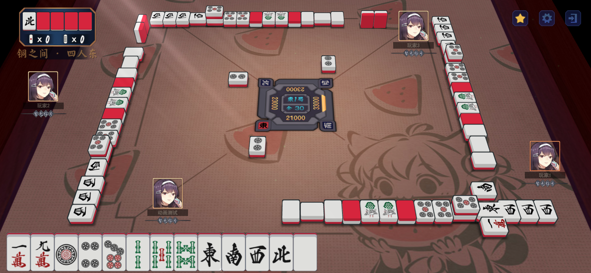
其他玩家自摸：摊牌与自摸牌 · review-0539-tsumo-seat-1-4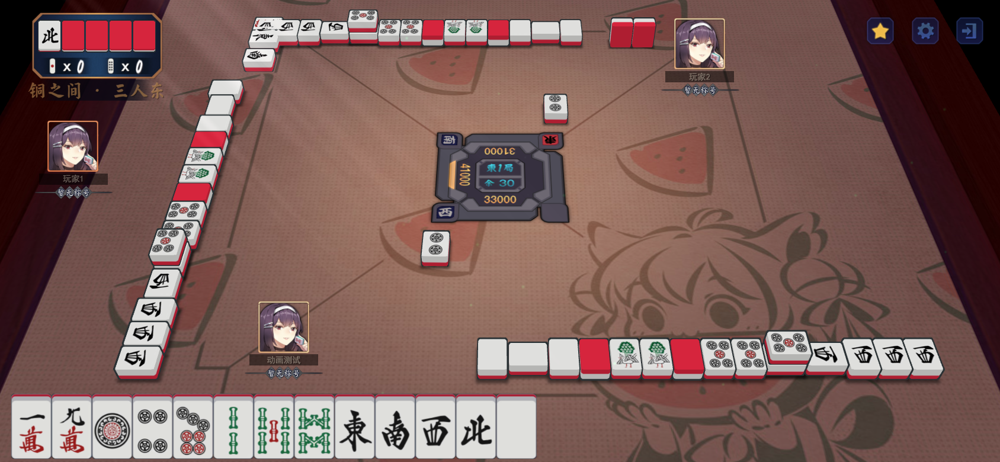
其他玩家自摸：摊牌与自摸牌 · review-0539-tsumo-seat-2-3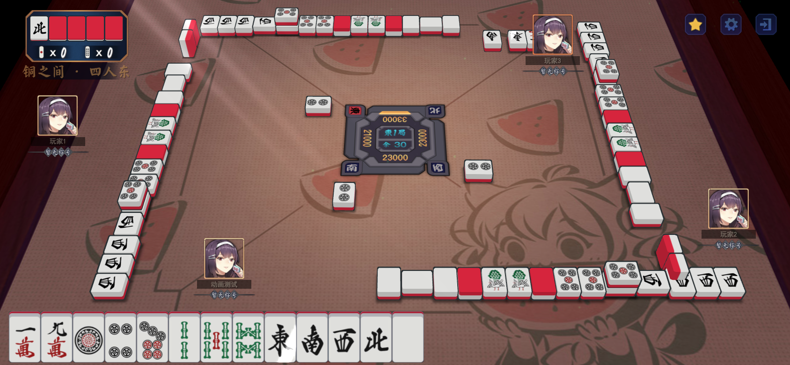
其他玩家自摸：摊牌与自摸牌 · review-0539-tsumo-seat-2-4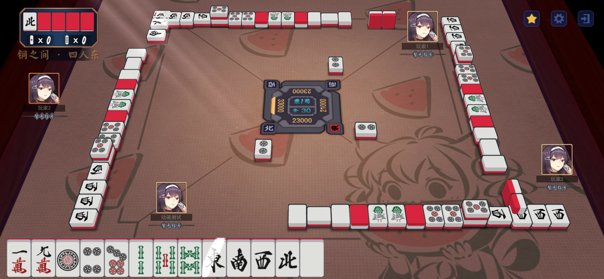
其他玩家自摸：摊牌与自摸牌 · review-0539-tsumo-seat-3-4